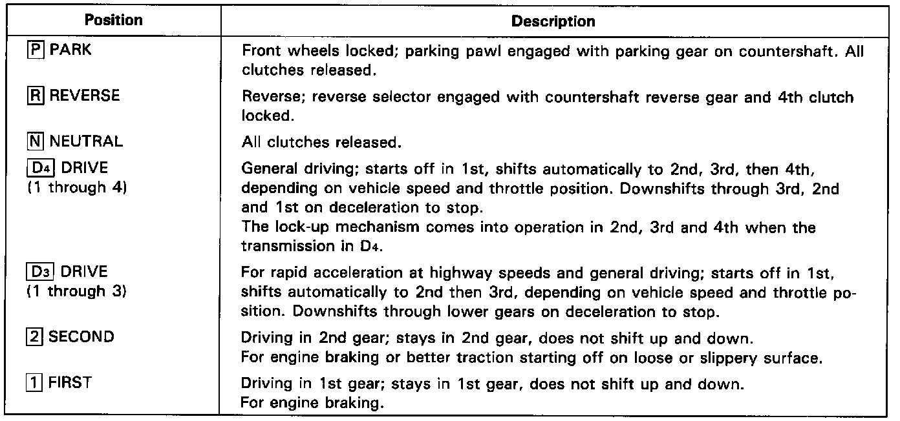

General Description
DescriptionThe automatic transmission is a combination of a 3-element torque converter and a dual-shaft electronically controlled automatic transmission which provides 4 speeds forward and 1 reverse. The entire unit is positioned in line with the engine.
Torque Converter, Gears and Clutches
The torque converter consists of a pump, turbine and stator, assembled in a single unit.
They are connected to the engine crankshaft so they turn together as a unit as the engine turns.
Around the outside of the drive plate is a ring gear which meshes with the starter pinion when the engine is being started. The entire torque converter assembly serves as a flywheel while transmitting power to the transmission mainshaft. The transmission has two parallel shafts, the mainshaft and the countershaft. The mainshaft is in line with the engine crankshaft.
The mainshaft includes the clutches for 1st, 2nd and 4th, and gears for 4th, 2nd, 1st and reverse (3rd gear is integral with the mainshaft, while the reverse gear is integral with 4th gear).
The countershaft includes the clutches for 3rd, and 1st-hold, and gears for 3rd, 4th, 1st, 2nd and reverse. The secondary drive gear is integrated with the countershaft.
The gears on the mainshaft are in constant mesh with those on the countershaft.
When certain combinations of gears in the transmission are engaged by clutches, power is transmitted from the main- shaft to the countershaft to provide (1), (2), (D3), and (D4).
Electronic Control
The electronic control system consists of an automatic transmission (A/T) control unit, sensors, a linear solenoid and four solenoid valves. Shifting and lock-up are electronically controlled for comfortable driving under all conditions.
The A/T control unit is located behind the glove box on the passenger's side.
Hydraulic Control
The lower valve body assembly includes the main valve body, servo body, shift control solenoid valves and the oil pass body. They are bolted on the lower part of the transmission housing.
Other valve bodies, the regulator valve body, oil pump body, 2nd accumulator body, and throttle valve body, are bolted to the torque converter housing.
The main valve body contains the manual valve, 1-2 shift valve, 2-3 shift valve, 3-4 shift valve, 4th kick-down valve, 3rd kick-down valve, 2-3 orifice control valve, 3-4 orifice control valve, 4th exhaust valve, servo control valve, and Clutch Pressure Control (CPC) valve.
The servo body contains the servo valve, 3rd and 4th accumulator pistons.
The regulator valve body contains the regulator valve, lock-up shift valve, and cooler relief valve.
Fluid from the regulator passes through the manual valve to the various control valves.
The throttle valve body includes the throttle valve which is bolted onto the 2nd accumulator body. The 2nd accumulator piston is assembled in the 2nd accumulator body.
The linear solenoid is joined the throttle valve body.
The oil pump body contains the modulator valve, lock-up control valve, lock-up timing valve, and relief valve.
The torque converter check valve is located in the torque converter housing under the oil pump body.
The 1st and 1st-hold accumulator pistons are assembled in the rear cover.
The 1st, 1st-hold, 3rd, and 4th clutches receive oil from their respective feed pipes.
Shift Control Mechanism
Input from various sensors located throughout the car determines which shift control solenoid valve the A/T control unit will activate. Activating a shift control solenoid valve changes modulator pressure, causing a shift valve to move. This pressurizes a line to one of the clutches, engaging that clutch and its corresponding gear.
Lock-up Mechanism
In (D4) position, in 2nd, 3rd and 4th, pressurized fluid is drained from the back of the torque converter through an oil passage, causing the lock-up piston to be held against the torque converter cover. As this takes place, the mainshaft rotates at the same speed as the engine crankshaft. Together with hydraulic control, the A/T control unit optimizes the timing of the lock-up mechanism. The lock-up valves control the range of lock-up according to lock-up control solenoid valves A and B, and throttle valve. When lock-up control solenoid valves A and B activate, modulator pressure changes. The lock-up control solenoid valves A and B are mounted on the torque converter housing, and are controlled by the A/T control unit.

Gear Selection
The selector lever has seven positions; (P) PARK, (R) REVERSE, (N) NEUTRAL, (D4) 1st through 4th positions, (D3) 1st through 3rd positions, (2) 2nd gear and (1) 1st gear.
Starting is possible only in (P) and (N) position through use of a slide-type, neutral-safety switch.
Position Indicator
A position indicator in the instrument panel shows what gear has been selected without having look down at the console.